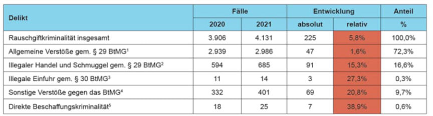
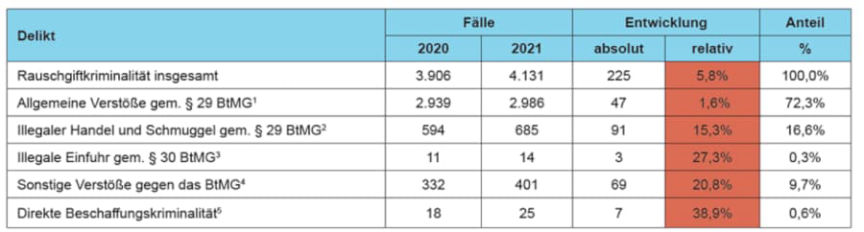

German Arrested for Selling Marijuana on the Darkweb
~2 min read | Published on 2022-04-30, tagged Arrested, DarkWeb, Drugs, General-News, German using 285 words.
Police in Lower Bavaria, Germany, arrested two men suspected of trading in large quantities of drugs through the dark web.
According to a press release by police in Lower Bavaria, the first suspect, a 31-year-old man, has been selling marijuana through the darkweb since April 2021. The second suspect, a 25-year-old man, is accused of reselling marijuana purchased on the darkweb. He allegedly resold 10 kilograms of marijuana since February 2021.
The investigations that led to the discovery of the suspects’ identities were carried out by the Lower Bavaria criminal police inspectorate in conjunction with the Deggendorf and Landshut public prosecutors.
On April 27, 2022, the investigators acquired and executed search warrants on the 31-year-old’s apartment, workshop, and his girlfriend’s apartment. At the same time, the police also searched the 25-year-old’s apartment and his mother’s apartment.
The searches resulted in the seizure of approximately 400 pills containing an undisclosed opioid, anabolic steroids, and small quantities of undisclosed drugs. The investigators also found and seized several thousand euros and electronic devices.
The press release also pointed to an increase in the number of drug cases in the region in 2021:
After a decrease in registered offenses of 11.6% from 2019 to 2020, the statistics for 2021 show an increase of 225 cases (5.8%) to 4,131 cases (2020: 3,906). This is the second highest value in a ten-year comparison. The increase in illegal trade and smuggling alone is 91 cases to 685 (2020: 594 cases). At 94.4% in 2021 (2020: 95.3%), the clearance rate remained at a very high level. Drug-related crime consists almost exclusively of offenses that are usually only uncovered by police investigations and which express a connection between the statistical number of cases and successful intervention by the police.

According to a press release by police in Lower Bavaria, the first suspect, a 31-year-old man, has been selling marijuana through the darkweb since April 2021. The second suspect, a 25-year-old man, is accused of reselling marijuana purchased on the darkweb. He allegedly resold 10 kilograms of marijuana since February 2021.
The investigations that led to the discovery of the suspects’ identities were carried out by the Lower Bavaria criminal police inspectorate in conjunction with the Deggendorf and Landshut public prosecutors.
On April 27, 2022, the investigators acquired and executed search warrants on the 31-year-old’s apartment, workshop, and his girlfriend’s apartment. At the same time, the police also searched the 25-year-old’s apartment and his mother’s apartment.
The searches resulted in the seizure of approximately 400 pills containing an undisclosed opioid, anabolic steroids, and small quantities of undisclosed drugs. The investigators also found and seized several thousand euros and electronic devices.
The press release also pointed to an increase in the number of drug cases in the region in 2021:
After a decrease in registered offenses of 11.6% from 2019 to 2020, the statistics for 2021 show an increase of 225 cases (5.8%) to 4,131 cases (2020: 3,906). This is the second highest value in a ten-year comparison. The increase in illegal trade and smuggling alone is 91 cases to 685 (2020: 594 cases). At 94.4% in 2021 (2020: 95.3%), the clearance rate remained at a very high level. Drug-related crime consists almost exclusively of offenses that are usually only uncovered by police investigations and which express a connection between the statistical number of cases and successful intervention by the police.
